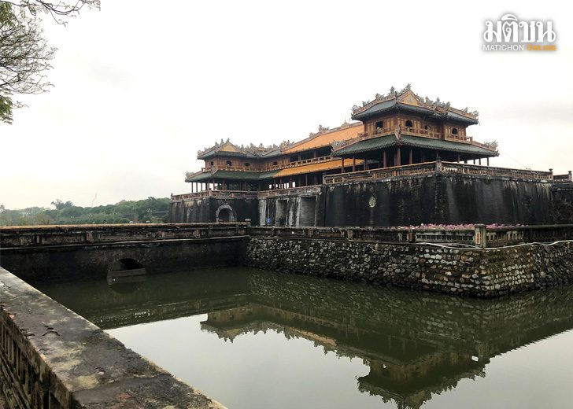

อาณาจักรนามเวียด

อาณาจักรแรกของชาวเวียดนาม คืออาณาจักร นามเวียด (อาณาจักรทางตอนเหนือ) เป็นเป็นเมืองขึ้นของจีนมานาน ทำให้เวียดนามเป็นประเทศที่เดี่ยวในเอเชียตะวันออกเฉียงใต้ที่ได้รับอิทธิพลทางวัฒนธรรมจากจีนเป็นส่วนใหญ่ แม้ต่อมาอาณาจักรนามเวียดจะเป็นอิสระแต่ก็ยังคงส่งเครื่องบรรณาการส่งให้จีน (จีนถือว่านามเวียดเป็นเมืองประเทศราช) ทางตอนกลางและตอนใต้ของประเทศเวียดนามในอดีตเป็นที่ตั้งของอาราจักรจามปา(พวกจาม ซึ่งปัจจุบันเป็นชนกลุ่มน้อยอยู่ทางตอนใต้ของประเทศเวียดนาม) ช่วงที่เป็นเอกราชจากจีน (ค.ศ. 938-1009)ช่วงนี้เป็นช่วงต้นราชวงศ์ถังซึ่งภายในจีนมีความวุ่นวายภายในเวียดนามก็สถาปนาราชวงศ์เล(Le Dynasty)